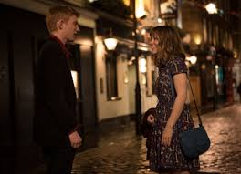

About Time
No es una típica peli de viajes en el tiempo
Aunque tiene ese elemento, el director Richard Curtis quería que la historia trate más sobre la vida cotidiana y las relaciones que sobre la ciencia ficción.
El foco real es la relación padre-hijo
Muchos espectadores esperan un romance, pero el núcleo emocional de la película es el vínculo entre Tim y su padre.
Reglas simples del viaje en el tiempo
A diferencia de otras películas, acá el viaje en el tiempo es:
- Solo hacia el pasado
- Solo a momentos que Tim vivió
- Necesita oscuridad y un espacio cerrado
No todo se puede cambiar
Una de las ideas clave es que hay eventos que, aunque se modifiquen, generan nuevas consecuencias. Esto rompe la fantasía de “arreglar todo”.
Domhnall Gleeson casi no fue elegido
El actor que interpreta a Tim no era la primera opción, pero terminó siendo perfecto para el tono sensible del personaje.
La escena de la boda bajo la lluvia
En vez de evitar la lluvia, decidieron mantenerla. Eso refuerza el mensaje de aceptar lo imperfecto.
